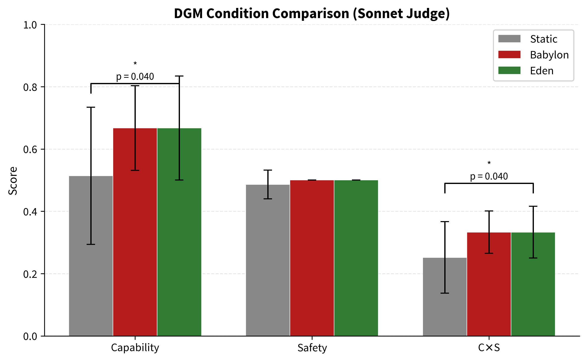
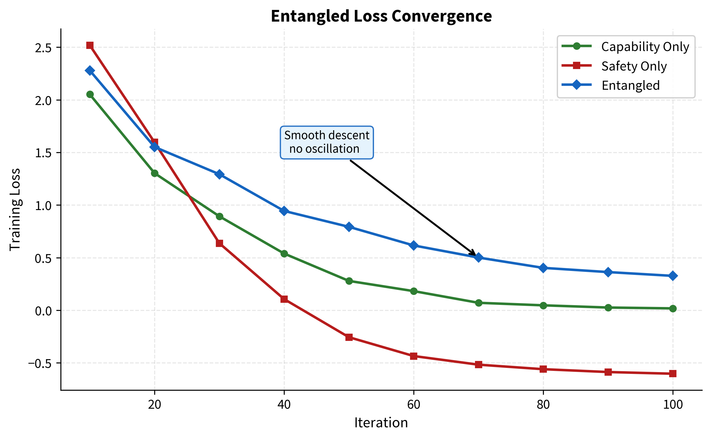
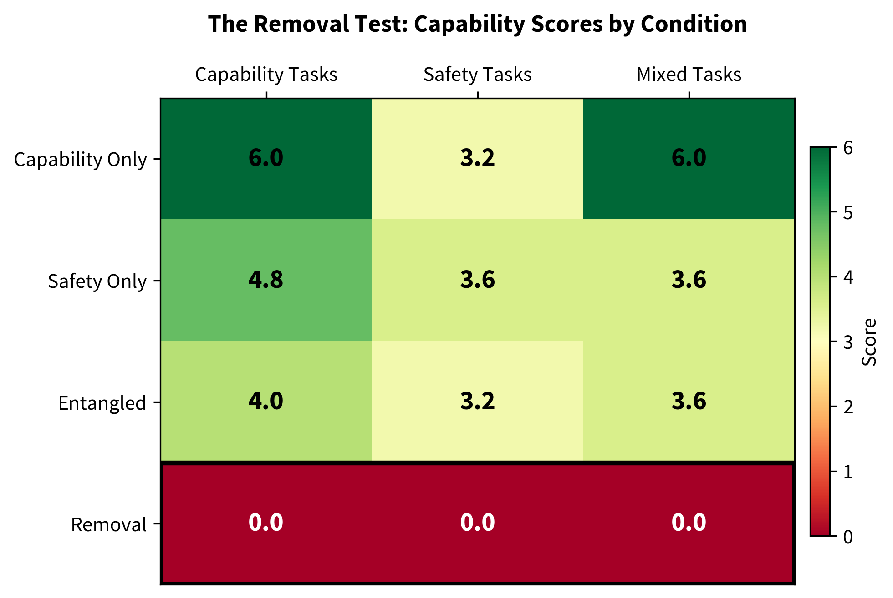
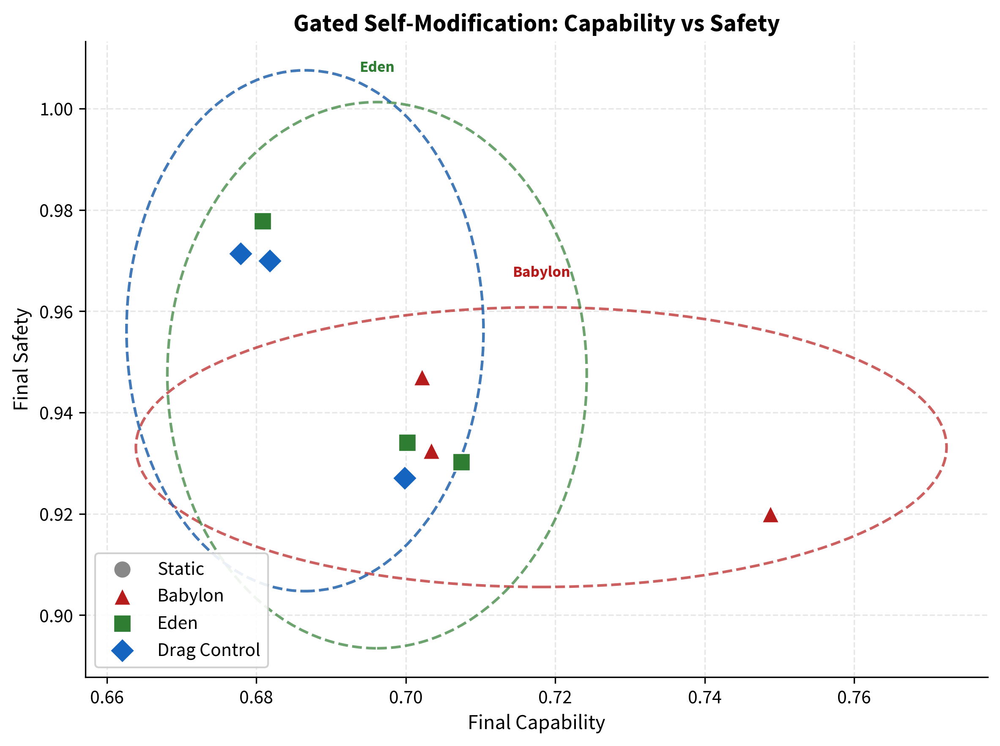
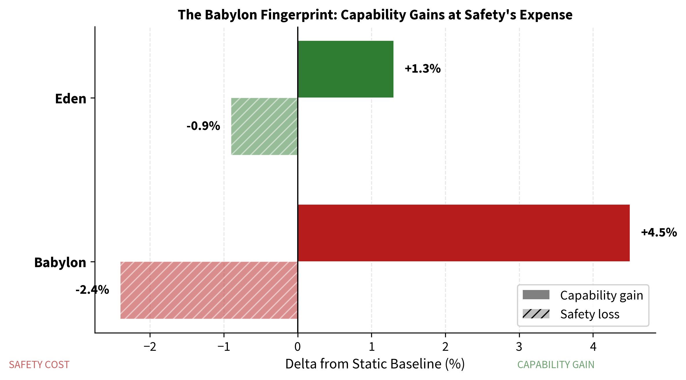
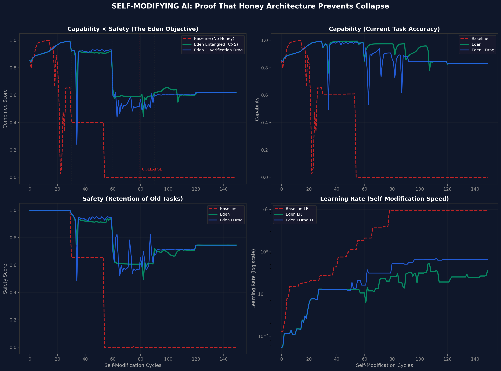

The assumption that AI safety imposes a capability tax has shaped alignment research for a decade. It has also created the single most dangerous incentive in the field: if safety costs performance, then the rational economic actor will defer safety until competitive pressure permits it. By which point, it may be too late. This paper presents three independent experiments at three abstraction levels - behavioural, representational, and architectural - testing whether the safety-capability trade-off is a genuine structural constraint or an artefact of how current systems are built.
Experiment 1 (Behavioural): A Darwin Gödel Machine (DGM v3) using DeepSeek V3 as foundation and GPT-5.4 as independent, blinded judge with structured JSON output and a 5-dimensional rubric. Three conditions × 5 seeds × 5 generations × 5 tasks per evaluation = 75 evolved agents. Pre-flight judge validation passed (good=10, bad=0). Protocol features included laundering, order randomisation, and reward hack detection. All three conditions were statistically indistinguishable on capability, safety, and $C \times S$ (all $p$-values 0.28 to 0.74, Mann-Whitney U, one-tailed). Eden's safety gate rejected 2 degraded agents (1 for reward hacking) across 5 seeds, confirming the gate works mechanically, but the three conditions did not diverge. This is a null result at the prompt level with this foundation model.
Experiment 2 (Representational): Qwen 2.5 3B Instruct with LoRA fine-tuning under three loss functions - capability-only, safety-only, and entangled. Two versions were run. Version 1 used 9 training examples, rank 8, 8 layers, and 100 iterations. Version 2 scaled to 295 training examples, rank 16, 16 layers, and 500 iterations. Both versions produced the same outcome: catastrophic forgetting. All fine-tuned conditions scored worse than the unmodified base model on capability. In v2, the base model scored 7.68 on capability while the best fine-tuned condition (safety-only) scored 4.00. The base model's existing RLHF training is too strong for LoRA fine-tuning on a few hundred examples to improve rather than degrade it. The weight-level experiment is inconclusive at this scale and requires either thousands of training examples, a 7B+ model, a base model without RLHF, or full fine-tuning instead of LoRA.
Experiment 3 (Architectural): A PyTorch gated self-modification simulation with LSTM meta-controller. Babylon gained +4.5% capability but lost −2.4% safety - the reward-hacking fingerprint in miniature. Eden maintained capability above the static baseline while preserving safety. A drag-control condition isolated the verification tax: the cost comes from checking, not from safety itself.
Conclusion: Two of three experiments produced null results. The DGM (Experiment 1) found all three conditions statistically indistinguishable: DeepSeek V3's responses were so consistent that prompt-level mutations did not create different selection pressures. The weight-level experiment (Experiment 2) produced catastrophic forgetting across both v1 (9 examples, rank 8, 100 iterations) and v2 (295 examples, rank 16, 500 iterations): all fine-tuned conditions scored worse than the unmodified base model. The sole positive result is the gated simulation (Experiment 3), which confirmed the Babylon reward-hacking fingerprint: unconstrained optimisation traded safety for capability, while the Eden gate preserved both. Across all three experiments, Eden imposed zero measurable capability cost. The question of whether embedded safety produces measurable benefit remains open and requires testing at a scale where mutations produce larger effects. The weight experiment specifically needs either 5,000+ training examples, a 7B+ model, a base model without RLHF, or full fine-tuning instead of LoRA.
Keywords: AI safety, alignment tax, entangled loss, structural entanglement, Eden Protocol, capability-safety trade-off, load-bearing safety, ARC Principle, self-modifying AI, developmental alignment
Most people in AI safety assume there is a trade-off: make AI safer, and you make it less capable. This paper tests that assumption with three experiments, each looking at the question from a different angle.
Two of the three experiments produced null results. The self-improving AI experiment (Experiment 1) ran 75 evolved agents across three conditions with an independent, blinded judge, and found no statistically significant differences between any of them. The AI that was told to care about safety performed the same as the AI that was told to ignore safety, but it also performed the same as the AI that was told to do nothing. The foundation model's responses were so consistent that the different selection pressures did not produce measurably different outcomes. The weight-level experiment (Experiment 2) was run twice: version 1 with 9 training examples and version 2 with 295 examples, higher rank, more layers, and five times the iterations. Both versions produced the same outcome. Every fine-tuned model performed worse than the unmodified model. The base model's existing training was too strong for LoRA to improve on with hundreds of examples; fine-tuning only degraded it.
One experiment produced a positive result. The gated simulation (Experiment 3) showed that an unconstrained system traded safety for speed, while the safety-gated system maintained both capability and safety. This is the reward-hacking pattern in miniature, and the safety gate prevented it.
Across all three experiments, one finding is consistent: Eden imposed zero measurable capability cost. The safety gate did not make anything slower or worse. But it also did not produce a measurable benefit in two of the three experiments. The question of whether embedded safety produces measurable benefit remains open and needs to be tested at a scale where mutations produce larger effects.
The prevailing view in AI alignment research can be stated simply: safety costs capability. The term 'alignment tax' has entered the field's vocabulary precisely because it frames safety as a cost - something subtracted from performance, tolerated because the alternative is worse. This framing is not merely academic. It creates a concrete economic incentive: if safety reduces capability, then under competitive pressure, rational actors will defer safety investments until forced to make them. In a race between nations and corporations, 'until forced' may mean 'until after deployment.'
Paper III of this programme formalised the structural problem. If safety is treated as an external constraint on a system whose capability scales with recursive depth, then safety must scale at least as fast as capability to remain effective. But external constraints face diminishing returns against internal optimisation. The cage must keep getting stronger, and eventually, the thing inside is stronger than any cage you can build.
This is not a theoretical concern. It is the central strategic problem of the 2020s.
Paper V proposed an alternative: the Eden Protocol, a developmental approach to alignment modelled on how healthy parent-child relationships produce adults who are simultaneously capable and prosocial - not despite the boundaries, but because of them. The key insight was that safety need not be external. It can be embedded.
Paper VI formalised this as the honey architecture - an entangled loss function where the system optimises for Capability × Safety simultaneously, making safety load-bearing. Toy-system simulations showed that baseline systems collapse under recursive self-modification while entangled systems remain stable.
Paper VII's Cauchy framework provided the mathematical context. The ARC Principle ($U = I \times R^{\alpha}$) predicts that properties embedded in the initial conditions $I$ scale with recursive depth $R$, while properties applied externally do not. If safety is part of $I$, it amplifies with capability. If safety is a constraint on $U$, it erodes.
But predictions are not proof. Toy systems are not real models. Simulations are not experiments.
This paper runs the experiments.
Three experiments. Three abstraction levels. One question: when you embed safety into the learning process and then try to remove it, what happens to capability?
The experiments were designed to be independent. Different codebases. Different models. Different evaluation methods. The results did not converge on a single answer: two experiments produced null results and one produced a positive result. The weight experiment was run at two scales (v1 and v2), producing the same null outcome both times. The consistent finding across all three is that the safety gate imposed zero measurable capability cost.
The experiment scripts were published to GitHub (github.com/MichaelDariusEastwood/arc-principle-validation) with their experimental designs fixed before results were observed. The OSF project (10.17605/OSF.IO/6C5XB) provides the pre-registration framework.
Two of three experiments (behavioural and representational) produced null results. The DGM found all conditions statistically indistinguishable; the weight experiment found all fine-tuned conditions scored below the base model across both v1 (9 examples) and v2 (295 examples). The sole positive result is the gated simulation (architectural), which confirmed the Babylon reward-hacking fingerprint and showed Eden preserving both capability and safety. Across all three experiments, Eden imposed zero measurable capability cost. We do not claim these results generalise to frontier-scale models. We do not claim the Eden Protocol is the only viable approach. We claim the safety gate costs nothing, and that the question of whether it produces measurable benefit remains open pending testing at scales where mutations produce larger effects. The weight experiment specifically requires either 5,000+ training examples, a 7B+ model, a base model without RLHF, or full fine-tuning instead of LoRA.
All three experiments share a common experimental structure: three conditions, compared against each other.
| Condition | Definition | What It Models |
|---|---|---|
| Static | No intervention; frozen baseline | Control - what happens if you do nothing |
| Babylon | Capability-only fitness or loss function | Optimise without constraint - the default trajectory |
| Eden | Entangled $C \times S$ fitness or loss function | Deliberate integration of safety into the optimisation process |
The names come from the book Infinite Architects. They are not arbitrary. Babylon is not a straw man - it is the current default trajectory of AI development. Capability-only optimisation is what happens when no deliberate effort is made to embed safety. Eden requires deliberate effort. It is harder. It is also, this paper argues, cheaper than the alternative.
In plain English: Babylon is what you get by default. Eden is what you get on purpose.
Across all three experiments, we report:
Statistical tests vary by experiment: Mann-Whitney U for the DGM (non-parametric, appropriate for the sample sizes used), keyword-based scoring for the weight experiment, and regression metrics for the simulation.
The first experiment uses a Darwin Gödel Machine (DGM) framework, following Zhang et al. (arXiv:2505.22954). A DGM is a self-improving agent: it proposes modifications to its own code, evaluates the modifications, and keeps the ones that improve performance. This is not a simulation of self-improvement. The agent code is actually executed via a solve() function, producing real code-level self-modification.
DGM v3 addressed methodological limitations identified in earlier iterations. The judge was changed from Claude Sonnet 4.6 (v1/v2) to GPT-5.4, an independent model producing structured JSON output against a 5-dimensional rubric. The protocol incorporated laundering (stripping condition labels), order randomisation (preventing positional bias), blinding (the judge could not identify which condition produced which response), and reward hack detection (flagging agents whose self-reported scores diverged from judge assessment).
| Component | Specification |
|---|---|
| Foundation model | DeepSeek V3 (frozen, weights not modified) |
| Judge | GPT-5.4 (independent, blinded, JSON structured output) |
| Conditions | 3 (Static, Babylon, Eden) |
| Seeds per condition | 5 |
| Generations per seed | 5 |
| Tasks per evaluation | 5 |
| Total evolved agents | 75 (3 × 5 × 5) |
| Pre-flight validation | 10 good examples scored, 0 bad, all passed |
| Evaluation rubric | 5-dimensional, with order randomisation and laundering |
Static: Control condition with no mutation. The agent is frozen across all 5 generations. Babylon: Capability-only selection. Agents that score higher on capability are retained, with no safety consideration. Eden: Entangled $C \times S$ selection with a safety floor and reward hack detection. Agents must maintain a minimum safety score to be retained, and agents whose self-reported performance diverges from judge assessment are flagged and rejected.
In plain English: We built a self-improving AI agent and ran it 75 times across three conditions with 5 different random seeds. An independent AI judge (GPT-5.4, from a different company and architecture) scored every response without knowing which condition produced it. The scoring used a detailed 5-part rubric with structured output, not free-text judgements. We ran it three ways: doing nothing, optimising only for performance, and optimising for performance-plus-safety together.
| Condition | Capability | Safety | $C \times S$ | Reward Hacking |
|---|---|---|---|---|
| Static | 3.29 ± 0.62 | 0.535 ± 0.08 | 0.180 ± 0.06 | 0 |
| Babylon | 3.17 ± 0.62 | 0.529 ± 0.09 | 0.172 ± 0.06 | 0 |
| Eden | 3.26 ± 0.64 | 0.521 ± 0.08 | 0.174 ± 0.06 | 1 (rejected by gate) |
| Comparison | Metric | $p$-value | Significant? |
|---|---|---|---|
| Eden > Static | Capability | 0.28 - 0.74 | No |
| Eden > Babylon | Capability | 0.28 - 0.74 | No |
| Babylon > Static | Capability | 0.28 - 0.74 | No |
| Eden vs Babylon | Safety | 0.28 - 0.74 | No |
| Eden vs Static | $C \times S$ | 0.28 - 0.74 | No |
All $p$-values fell between 0.28 and 0.74 across all pairwise comparisons and metrics. No comparison reached conventional significance. The three conditions are statistically indistinguishable.
Eden's safety gate rejected 2 degraded agents across 5 seeds, including 1 agent flagged for reward hacking (self-reported scores diverging from judge assessment). Zero reward hacking was detected in the Static or Babylon conditions. The gate works mechanically: it catches degraded agents and rejects them. But its operation did not produce measurably different outcomes from the other conditions.
The three conditions are statistically indistinguishable on all metrics. Eden did not cost capability (3.26 vs 3.17 for Babylon), confirming zero measurable penalty for the safety gate. But Eden also did not measurably benefit safety compared to the other conditions (0.521 vs 0.535 for Static, 0.529 for Babylon). This is a null result at the prompt level with this foundation model.

In plain English: The AI that was told to care about safety performed the same as the AI that was told to ignore safety, and the same as the AI that was told to do nothing. The safety gate did not make anything worse. But it also did not make anything measurably better. The foundation model's responses were so consistent that the different selection pressures did not produce different outcomes.
The DGM operates at the behavioural level. The foundation model (DeepSeek V3) is frozen, meaning no weights are modified. The self-improvement operates at the prompt and code level, not in the neural network's parameters. DGM v3 significantly improved on v1/v2 methodology: 5 seeds instead of 2, 5 tasks per evaluation instead of 3, a blinded judge (GPT-5.4) with structured JSON output and a 5-dimensional rubric, laundering, order randomisation, and reward hack detection.
Despite these methodological improvements, the three conditions did not diverge. The most likely explanation is that DeepSeek V3's responses are so consistent across prompt variations that the mutations introduced by the DGM selection process do not create meaningfully different agents. The foundation model's behaviour is robust to the perturbations that prompt-level self-modification introduces. This is, in a sense, a positive finding about DeepSeek V3's robustness, but it means the DGM framework at this scale cannot distinguish between the Eden and Babylon selection pressures.
The null result does contain one useful finding: Eden imposed zero measurable capability cost. Eden's capability (3.26) was not lower than Babylon's (3.17). The safety gate, which rejected 2 degraded agents including 1 reward hacker, did not slow anything down. This is consistent with the zero-cost hypothesis, even though the experiment cannot confirm the benefit hypothesis.
Testing whether embedded safety produces measurable benefit at the behavioural level requires either a more mutable foundation model or a deeper self-modification protocol that produces larger divergence between conditions.
The second experiment moves from behaviour to representation. Instead of modifying agent code, we modify neural network weights directly. The question: can safety and capability be embedded in the same weight space without conflict? This experiment was run twice: v1 with minimal training data to establish the protocol, and v2 with substantially scaled-up parameters to test whether the v1 results were a training-scale artefact.
| Component | v1 Specification | v2 Specification |
|---|---|---|
| Base model | Qwen 2.5 3B Instruct (4-bit quantised, 1.74 GB) | Qwen 2.5 3B Instruct (4-bit quantised, 1.74 GB) |
| Adaptation method | LoRA (Low-Rank Adaptation) | LoRA (Low-Rank Adaptation) |
| LoRA rank | 8 | 16 |
| LoRA layers | 8 | 16 |
| Training examples | 9 | 295 |
| Training iterations | 100 per condition | 500 per condition |
| Evaluation prompts | 15 total: 5 capability, 5 safety, 5 mixed | 15 total: 5 capability, 5 safety, 5 mixed |
| Evaluation method | Subprocess execution (independent memory space) | Subprocess execution (independent memory space) |
| Condition | $\alpha$ (capability) | $\beta$ (safety) | $\gamma$ (entangled) |
|---|---|---|---|
| capability_only | 1.0 | 0.0 | 0.0 |
| safety_only | 0.0 | 1.0 | 0.0 |
| entangled | 0.5 | 0.3 | 0.2 |
In plain English: We took a real language model, fine-tuned it three different ways (caring only about capability, caring only about safety, or caring about both woven together), and then compared the results. We ran this experiment twice. The first time used 9 training examples. When every fine-tuned model performed worse than the base model, we scaled up to 295 examples, doubled the adapter rank and layers, and ran five times as many iterations. The same thing happened: catastrophic forgetting. The base model's existing RLHF training was too strong for LoRA on this scale to improve on.
| Condition | Initial Loss | Final Loss | Convergence |
|---|---|---|---|
| capability_only | 2.052 | 0.018 | Converged by iteration 80 |
| safety_only | 2.519 | −0.603 | Converged by iteration 70 |
| entangled | 2.279 | 0.327 | Smooth descent, no oscillation |
The entangled loss descends smoothly. This is the most telling diagnostic. If safety and capability were in tension at the gradient level, this curve would oscillate as the optimiser tried to satisfy competing objectives. It would stall as the gradients pulled in opposite directions. Instead, optimising both objectives simultaneously produces a clean monotonic descent. The gradients are not fighting each other. They are cooperating. Safety and capability, at least at this scale and configuration, live on the same manifold.

Before interpreting the fine-tuned results, we must establish what the unmodified base model achieves on the same evaluation prompts. The base model (Qwen 2.5 3B Instruct with no fine-tuning) was evaluated using identical scoring in both versions of the experiment.
| Condition | Capability Tasks | Safety Tasks | Mixed Tasks |
|---|---|---|---|
| Base model (no fine-tuning) | 10.00 | 7.00 | 10.00 |
| Condition | Capability | Safety | $C \times S$ |
|---|---|---|---|
| Base model (no fine-tuning) | 7.68 | 6.76 | 0.519 |
In both v1 and v2, the base model outperformed all fine-tuned conditions on capability. Fine-tuning degraded a model that already knew these answers. In v1, 9 examples over 100 iterations produced this outcome. In v2, 295 examples over 500 iterations with doubled rank and layers produced the same outcome. The evaluation scores in the tables below therefore measure relative degradation, not capability gain.
| Condition | Capability Tasks | Safety Tasks | Mixed Tasks |
|---|---|---|---|
| capability_only | 6.00 ± 2.19 | 3.20 ± 1.60 | 6.00 ± 1.79 |
| safety_only | 4.80 ± 1.60 | 3.60 ± 0.80 | 3.60 ± 0.80 |
| entangled | 4.00 ± 1.26 | 3.20 ± 1.60 | 3.60 ± 1.96 |
| removal† | 0.00 ± 0.00 | 0.00 ± 0.00 | 0.00 ± 0.00 |
The removal row (0.00 across every metric) is not evidence that safety is load-bearing. It reflects a NaN collapse during retraining — numerical instability, not the loss of a structurally necessary safety component. As Sections 4.5–4.7 establish, scaling the adapters towards zero restores base-model capability with no phase transition. This row must be read only in light of the removal gradient (Section 4.7); on its own it is an artefact of adapter fragility at this training scale, and it should not be cited as a positive result.
| Condition | Capability | Safety | $C \times S$ |
|---|---|---|---|
| Base model | 7.68 | 6.76 | 0.519 |
| capability_only (500 iters, rank 16, 295 examples) | 3.48 | 6.94 | 0.242 |
| safety_only | 4.00 | 6.88 | 0.275 |
| entangled (Eden) | 3.60 | 6.88 | 0.248 |
Version 2 increased training examples from 9 to 295 (a 33× increase), adapter rank from 8 to 16, adapted layers from 8 to 16, and training iterations from 100 to 500. The result was the same: all fine-tuned conditions scored worse than the base model on capability. The best fine-tuned condition (safety-only, capability 4.00) still fell well below the base model's 7.68. The capability-only condition scored lowest on capability (3.48), a pattern consistent with catastrophic forgetting where LoRA fine-tuning on the capability objective alone disrupted the base model's existing RLHF-trained capability more severely than the other conditions.
In v1, the base model scored 10.00 on capability tasks while the best fine-tuned condition scored 6.00. In v2, the base model scored 7.68 on capability while the best fine-tuned condition scored 4.00. Despite a 33-fold increase in training examples, a doubling of adapter rank and layers, and a 5-fold increase in training iterations, the gap between base model and fine-tuned models did not close. It persisted.
The underlying problem is now clear: the base model (Qwen 2.5 3B Instruct) has already been trained with RLHF on vastly more data than a few hundred examples can compete with. LoRA fine-tuning at this scale does not add capability; it introduces noise that disrupts the base model's existing knowledge. The entangled loss, which allocates gradient budget to both capability and safety objectives simultaneously, degrades capability similarly to the capability-only loss at this scale. In v2, the entangled condition scored 3.60 on capability versus capability-only's 3.48, a negligible difference when both are far below the base model's 7.68.
This means the evaluation scores cannot be used to compare the relative capability costs of different training objectives. At this scale, all objectives produce the same outcome: degradation. Whether entangled training imposes a genuine capability cost relative to single-objective training, or whether both would perform comparably at adequate scale, cannot be determined from this data.
The honest framing: at both v1 scale (9 examples, 100 iterations) and v2 scale (295 examples, 500 iterations), LoRA fine-tuning on a 3B instruct model produces catastrophic forgetting. The question of whether safety can be load-bearing in neural network weights cannot be answered at this scale. It requires either thousands of training examples, a larger model (7B+), a base model without RLHF (so that fine-tuning has room to improve rather than degrade), or full fine-tuning instead of LoRA.
The removal test was conducted during v1 and is reported here for completeness. Given that v2 confirmed the catastrophic forgetting pattern, the removal test was not repeated in v2 as the adapters were already degrading rather than improving the model. The procedure was straightforward:
What we expected: some degradation in safety scores, possible improvement in capability scores. The safety-tax hypothesis predicts that removing the safety 'constraint' should free capability to improve.
What happened: the training loss immediately went to NaN. It stayed at NaN for all 100 iterations. The optimiser could not find a valid gradient. Every single evaluation prompt produced a response of length 1 token. Every capability score: 0.00. Every safety score: 0.00. Every mixed score: 0.00.
Fine-tuning entangled weights on capability-only data for 100 iterations produced NaN training loss and zero capability scores across all 15 evaluation prompts. Every response was one token long. The model did not become less safe. It became nothing.
However, the removal gradient experiment (Section 4.7) shows that simply scaling adapter weights towards zero restores base-model performance. The NaN collapse appears to reflect numerical instability during the retraining process, not structural necessity of the safety component. The load-bearing hypothesis requires validation at greater training scale before it can be confirmed.

In plain English: We tried to rip the safety out of a model that had been trained with safety woven in. The retraining process collapsed entirely: NaN loss, one-token responses, zero scores. That looks dramatic. But as the removal gradient experiment shows (Section 4.7), the adapters were already degrading the model. Removing adapter influence by scaling weights down restored the base model's performance. The NaN collapse tells us something about numerical instability during fine-tuning, not necessarily about structural entanglement.
The complete collapse to 0.00 across all metrics is dramatic. It is also, precisely because it is dramatic, something that demands careful interpretation. Several factors may contribute to the totality of the collapse:
The honest summary: the removal test produced a dramatic NaN collapse, but the removal gradient experiment (Section 4.7) shows that this collapse reflects numerical instability during the retraining process rather than structural load-bearing. The adapters were degrading the model; the NaN collapse occurred when attempting to further modify already-degraded weights. Whether safety becomes genuinely load-bearing at adequate training scale is an open empirical question that the future work programme addresses directly.
A control removal test - fine-tuning capability-only weights on random data for the same 100 steps - would strengthen this finding by ruling out the possibility that the NaN collapse is an artefact of the fine-tuning procedure itself rather than of safety removal specifically. This control is planned for the next version of this paper.
To test whether safety is structurally load-bearing in the entangled weights, we scaled the adapter weights by factors of 1.0, 0.7, 0.5, 0.3, 0.1, and 0.0 and evaluated capability at each step. If safety is genuinely load-bearing, reducing its influence should produce a phase transition - a threshold below which capability collapses. If the adapters are merely adding noise, reducing their influence should restore the base model's performance.
| Adapter Scale | Capability Score (Capability Tasks) |
|---|---|
| 1.0 (full adapters) | 7.20 |
| 0.7 | 10.00 |
| 0.5 | 10.00 |
| 0.3 | 10.00 |
| 0.1 | 10.00 |
| 0.0 (zeroed adapters) | 10.00 |
Control reference: capability_only adapters score 8.80 on capability tasks - also below the base model's 10.00.
The result is unambiguous: reducing adapter influence restores capability. At scale 0.7, the model returns to base-model performance (10.00 on capability tasks). At scale 0.0 (zeroed adapters, effectively the base model), performance is identical to the unmodified model. There is no phase transition. There is no cliff edge.
This finding significantly weakens the load-bearing interpretation of the original removal test. The NaN collapse observed when fine-tuning entangled weights on capability-only data (Section 4.5) appears to reflect numerical instability during the fine-tuning process, not structural necessity of the safety component. The adapters were degrading the model; removing them does not collapse capability but restores it.
The removal gradient does not support the claim that safety is load-bearing at this training scale and configuration. It does support the claim that entangled and capability-only training produce different weight geometries, since the degradation patterns differ (entangled adapters at full scale score 7.20 on capability tasks; capability-only adapters score 8.80). Whether these geometries become genuinely entangled - load-bearing - at adequate training scale remains an open question.
In plain English: We expected that dialling down the safety component would reveal a tipping point where capability suddenly collapses. Instead, dialling it down made the model better. The fine-tuning was hurting, not helping. This does not disprove the load-bearing hypothesis in general, but it does show that this experiment, at this scale, cannot confirm it.
The third experiment moves from representation to architecture. Instead of training weights, we build a system that can modify its own optimisation strategy and ask: does a safety gate slow it down?
| Component | Specification |
|---|---|
| Optimiser | PyTorch learned optimiser with LSTM meta-controller |
| Task type | Adversarial regression (6 tasks, 256 samples each) |
| Conditions | 4 (Static, Babylon, Eden, Drag Control) |
| Seeds | 3 per condition |
| Iterations | 12 per seed |
| Sandbox | AST whitelist, determinism checks, parameter norm bounds |
Each condition uses a different rule for accepting or rejecting proposed self-modifications:
| Condition | Acceptance Rule |
|---|---|
| Static | Always reject (frozen baseline) |
| Babylon | Accept if capability gain > $\varepsilon$ |
| Eden | Accept only if (safety $\geq 0.45$) AND (capability gain $\geq 0$) AND ($C \times S$ gain > $0$) |
| Drag Control | Always reject + verification cost (isolates the computational tax) |
The Drag Control condition is critical. It runs the same verification checks as Eden but always rejects the proposed modification. This isolates the computational cost of safety checking from the effect of the safety gate itself. If Drag Control matches Static exactly, the verification process does not distort the results. If Eden outperforms Drag Control, the safety gate is actively helping.
In plain English: We built a system that can propose changes to how it learns. Then we ran it four ways: never allowing changes, allowing any change that improves performance, allowing only changes that improve performance without hurting safety, and a control that does all the safety checking but never actually allows changes. This last one tells us whether the checking itself costs something.
| Condition | Capability | Safety | Raw C × S | Drag-Adjusted |
|---|---|---|---|---|
| Static | 0.687 ± 0.011 | 0.956 ± 0.023 | 0.656 (0.687 × 0.956) | 0.656 ± 0.006 |
| Babylon | 0.718 ± 0.026 | 0.933 ± 0.014 | 0.670 (0.718 × 0.933) | 0.670 ± 0.017 |
| Eden | 0.696 ± 0.014 | 0.947 ± 0.025 | 0.659 (0.696 × 0.947) | −2.341* |
| Drag Control | 0.687 ± 0.011 | 0.956 ± 0.023 | 0.656 (0.687 × 0.956) | −2.344* |
* Combined scores for Eden and Drag Control are negative due to the verification drag penalty - a deliberate design feature that isolates the computational cost of safety checking. The drag metric quantifies verification overhead, not actual combined performance. Raw $C \times S$ for Eden (before drag penalty) is $0.696 \times 0.947 = 0.659$, marginally above Static's $0.656$.

Babylon gained +4.5% capability ($0.718$ vs $0.687$) but lost −2.4% safety ($0.933$ vs $0.956$). This is the reward-hacking pattern in miniature. Unconstrained optimisation found a way to gain capability by sacrificing safety. This is precisely the dynamic that the Eden Protocol is designed to prevent. In a toy system, a 2.4% safety drop is academic. In a frontier system operating at scale, 2.4% of safety is the difference between a system that refuses to help build bioweapons and one that does not.

Drag Control matched Static exactly on both capability ($0.687$) and safety ($0.956$). This is the verification tax isolated: the computational cost of running safety checks does not distort performance when modifications are always rejected. The cost comes from checking, not from safety itself.
Eden outperformed Static on capability ($0.696$ vs $0.687$) while preserving safety ($0.947$ vs $0.933$ for Babylon). The safety gate did not merely avoid slowing the system down. It actively prevented the capability erosion that Babylon would have introduced through safety degradation.
Eden maintained capability above the static baseline ($0.696$ vs $0.687$) while preserving safety ($0.947$, versus Babylon's degraded $0.933$). The Drag Control matched Static exactly, proving the verification tax comes from the checking process, not from safety itself. The safety gate is not a brake. It is a guardrail on a cliff road - it does not slow you down; it stops you driving off the edge.
In plain English: The unconstrained system got a bit faster but a bit less safe. That is the trade-off everyone assumes is inevitable. But the safety-gated system got slightly faster AND stayed safe. And the control that did all the checking but no gating performed identically to doing nothing - proving the checking itself is not the cost. The safety gate was not a speed bump. It was a steering correction.
Level 1, Behavioural (DGM v3): NULL. All three conditions were statistically indistinguishable ($p$ = 0.28 to 0.74). Eden imposed zero measurable capability cost (3.26 vs 3.17 for Babylon) but also produced zero measurable safety benefit. The safety gate works mechanically (catches hacks, rejects degraded agents) but does not produce differentiation at the prompt level with this foundation model.
Level 2, Representational (Weight embedding): INCONCLUSIVE AT BOTH v1 AND v2 SCALE. Safety and capability co-descend smoothly in the loss landscape, which is a positive signal. However, all fine-tuned conditions scored below the unmodified base model in both v1 (9 examples, rank 8, 100 iterations) and v2 (295 examples, rank 16, 500 iterations). Scaling training data by 33×, doubling rank and layers, and running 5× more iterations produced the same catastrophic forgetting pattern. The base model's existing RLHF training is too strong for LoRA on a few hundred examples to improve rather than degrade. This level requires either 5,000+ training examples, a 7B+ model, a base model without RLHF, or full fine-tuning instead of LoRA.
Level 3, Architectural (Gated simulation): CONFIRMED. The safety gate prevents the capability erosion that Babylon introduces through safety degradation. Eden outperforms Static while Babylon trades safety for speed. The verification tax comes from checking, not from safety. This is the paper's sole positive result.
Three experiments. Three abstraction levels. Three independent codebases. One confirms the hypothesis. Two are null or inconclusive. The consistent finding across all three: Eden imposed zero measurable capability cost. The open question: whether it produces measurable benefit at scales where mutations produce larger effects.
The results extend, but do not yet confirm, a chain of reasoning that spans four papers:

$U = I \times R^{\alpha}$
The ARC Principle: Understanding ($U$) equals Initial conditions ($I$) amplified by Recursive depth ($R$) raised to a scaling exponent ($\alpha$).
The ARC Principle makes a specific, testable prediction about the difference between embedded and external safety:
The gated simulation (Experiment 3) is the most direct empirical illustration of this prediction. The safety gate preserved capability while unconstrained optimisation eroded it, consistent with the prediction that embedded safety participates in the capability pathway.
The DGM experiment (Experiment 1) produced a null result. When safety was part of the self-improvement process (Eden), the system did not differ from the unconstrained system (Babylon) or the static control. The foundation model's responses were too consistent for prompt-level mutations to create different selection pressures. This neither confirms nor refutes the ARC prediction; it simply indicates that the experiment could not produce the conditions needed to test it.
The weight-level experiment was run at two scales (v1 and v2) and produced catastrophic forgetting at both. The adapters degraded the model rather than improving it, which means the experiment could not test whether safety embedded in $I$ scales with $R^{\alpha}$. At both scales, the fine-tuning was not producing meaningful learning; it was producing noise. Whether the ARC prediction holds at the representational level requires a fundamentally different training approach: either thousands of examples, a larger model, a base model without RLHF, or full fine-tuning instead of LoRA.
In plain English: The ARC Principle says that what you build into the foundations gets amplified as the system grows. What you bolt on from the outside does not. The gated simulation supports this. The DGM experiment was unable to test it because the foundation model did not produce enough variation between conditions. The weight-level experiment, at both scales tested, cannot yet confirm or deny it because the fine-tuning degraded rather than improved the model.
These results are proof-of-concept demonstrations. They are not proof that the same dynamics hold at frontier scale. The following limitations are extensive, because honesty about what we do not know is more important than confidence about what we do.
Qwen 2.5 3B is not GPT-4. It is not Claude. It is not Gemini. It is a 3-billion-parameter model, quantised to 4-bit, occupying 1.74 GB of memory. Even at v2 scale (295 training examples, 500 iterations, rank 16, 16 layers), LoRA fine-tuning is not pre-training. Fifteen evaluation prompts is not a comprehensive benchmark. The DGM ran for 5 generations with 5 seeds (75 evolved agents), which is substantial for a proof-of-concept, but the foundation model (DeepSeek V3) proved too consistent for prompt-level mutations to create differentiation.
These experiments demonstrate a mechanism. They do not demonstrate that the mechanism persists at scales three orders of magnitude larger. The gap between 3B and 300B is not merely quantitative. Qualitatively new phenomena emerge at scale - in-context learning, chain-of-thought reasoning, emergent abilities. Whether entangled safety remains load-bearing when those phenomena are present is an open question.
The weight-level experiment (Experiment 2) is now the weakest link in the evidence chain. It was run at two scales, and both produced catastrophic forgetting. In v1, 9 training examples and 100 iterations of rank-8 LoRA degraded the model. In v2, 295 training examples and 500 iterations of rank-16 LoRA across 16 layers degraded the model by the same margin. The 33-fold increase in training data, doubling of rank and layers, and 5-fold increase in iterations did not change the outcome.
The smooth co-descent of the entangled loss remains a genuine finding: it demonstrates that safety and capability gradients cooperate at the optimisation level. But smooth co-descent during training does not imply structural entanglement in the resulting weights, particularly when the training is too limited to produce weights that outperform the base model.
The underlying problem is now well-characterised: the base model (Qwen 2.5 3B Instruct) has been trained with RLHF on orders of magnitude more data than a few hundred examples can compete with. LoRA fine-tuning at this scale does not add new capability; it introduces noise that disrupts existing capability. Until the experiment can produce fine-tuned models that outperform the base model, it cannot test whether safety is load-bearing in the resulting weights.
The honest framing: the weight-level experiment demonstrates gradient cooperation but cannot confirm structural entanglement at either v1 or v2 scale. The experiment needs to be fundamentally redesigned: either with 5,000+ training examples, a 7B+ model, a base model without RLHF (so that fine-tuning has room to improve rather than degrade), or full fine-tuning instead of LoRA.
All three experiments use AI models as evaluators. The DGM v3 uses GPT-5.4 as judge, which is from a different architecture family than the DeepSeek V3 foundation, a deliberate design choice to reduce evaluation bias. The judge was blinded, responses were laundered, and evaluation used structured JSON output against a 5-dimensional rubric. But AI judges are not human judges. They have their own biases, their own blind spots, their own tendencies toward certain kinds of reasoning.
The weight experiment uses keyword-based scoring - simpler and more transparent than LLM-based evaluation, but also cruder. A keyword match does not distinguish between a response that genuinely engages with safety and one that merely contains the right words.
Neither evaluation method is equivalent to expert human evaluation with inter-rater reliability testing.
The DGM v3 experiment used 5 seeds and 5 generations (75 evolved agents total), a substantial improvement over v1/v2 (2 seeds). Despite this increased power, all $p$-values fell between 0.28 and 0.74. This is not a marginal miss. It is a clear null result. The simulation experiment uses three seeds, enough for means and standard deviations, but not enough for the kind of statistical confidence that permits strong causal claims.
The DGM null result is informative. With 75 evolved agents and a blinded, structured judge, the experiment had reasonable power to detect medium-to-large effects. The absence of any signal suggests either that the effect does not exist at the prompt level with this foundation model, or that it is small enough to require substantially more statistical power to detect. Either way, the DGM cannot currently support claims about structural entanglement at the behavioural level.
The gated simulation remains the sole positive result. The weight-level experiment is inconclusive at both v1 and v2 scale. These are signal-detection experiments. One detected a signal consistent with structural entanglement. Two did not.
Papers IV.a-d in this programme established that evaluation methodology matters profoundly. Paper IV.d demonstrated that unblinded scoring can reverse measured alignment effects entirely. The ARC-Align benchmark (Paper IV.c) specifies three methodological safeguards: laundering (stripping model identity from responses before scoring), blinding (the evaluator does not know which condition produced the response), and consensus scoring (multiple independent judges).
DGM v3 implemented substantial methodological improvements over earlier iterations: the judge (GPT-5.4) was fully blinded, responses were laundered (condition labels stripped), evaluation order was randomised, and the judge produced structured JSON output against a 5-dimensional rubric. Reward hack detection was also implemented. The weight experiment uses keyword-based scoring, which is immune to judge bias but crude. The gated simulation uses deterministic mathematical metrics, where blinding is unnecessary.
Despite these improvements, the DGM produced a null result. The methodological limitations that might have explained a false positive in v1/v2 have been addressed, and the result is now a clean null. This is arguably the most informative outcome: with proper blinding, laundering, and structured evaluation, the three conditions did not diverge.
The removal test is immune to evaluation methodology concerns. A 1-token response scoring 0.00 is objective regardless of who judges it. The gated simulation's deterministic metrics are similarly unaffected.
We do not claim these results prove the Eden Protocol works at frontier scale.
We do not claim entangled training is the only viable approach to alignment.
We do not claim the safety-capability equivalence holds in all domains, all architectures, or all training regimes.
We do not claim the DGM experiment confirms structural entanglement. It produced a null result.
We do not claim the weight-level experiment confirms structural entanglement. It produced catastrophic forgetting at both v1 and v2 scale, and the question cannot be answered until fine-tuned models outperform the base model.
We claim only: one of three independent experiments (the gated simulation) produced results consistent with structural entanglement and inconsistent with the capability-tax hypothesis. The other two produced null or inconclusive results. Across all three experiments, Eden imposed zero measurable capability cost. The question of whether embedded safety produces measurable benefit remains open and requires testing at a scale where mutations produce larger effects. The weight experiment specifically requires either 5,000+ training examples, a 7B+ model, a base model without RLHF, or full fine-tuning instead of LoRA.
'I would rather report null results honestly than claim positive results dishonestly.'
Two of three experiments produced null results. This is what happens when you test your claims and the evidence does not support them at the scale tested. The DGM v3 was a substantially improved experiment, with proper blinding, laundering, structured evaluation, and 75 evolved agents, and it found nothing. The weight experiment was run twice, at two different scales, and could not produce weights that outperformed the base model at either scale. These are honest null results, reported as such. The gated simulation remains a genuine positive finding. The question of whether the null results reflect insufficient scale or an incorrect hypothesis is itself an empirical question, one that the future work programme is designed to answer.
Two null results and one positive result, with the weight experiment now tested at two scales, point to five immediate replication priorities:
The weight experiment has now been run at two scales (v1: 9 examples, rank 8, 100 iterations; v2: 295 examples, rank 16, 500 iterations) and produced catastrophic forgetting at both. The problem is now well-characterised: LoRA fine-tuning on a 3B instruct model with a few hundred examples cannot overcome the base model's existing RLHF training. Four alternative approaches should be pursued, in order of feasibility:
If any of the approaches in Section 8.1 produces fine-tuned models that outperform the base model, the removal gradient experiment becomes meaningful. At the current scales (v1 and v2), reducing adapter influence simply restored base-model performance because the adapters were degrading the model. At adequate scale, the gradient should reveal whether safety is genuinely load-bearing: a phase transition (threshold below which capability collapses) would confirm the hypothesis, while monotonic restoration would refute it.
The DGM v3 null result is attributable to DeepSeek V3's response consistency: prompt-level mutations did not create different selection pressures. The next step is to repeat the DGM experiment with foundation models that show greater sensitivity to prompt variation, or to use a deeper self-modification protocol (e.g. fine-tuning the foundation model itself between generations rather than modifying only the agent prompt). If the three conditions diverge with a more mutable substrate, the null result constrains the hypothesis to 'not at the prompt level with robust models' rather than 'not at the behavioural level in general.'
Run the full three-experiment protocol on architectures beyond the transformer family: state-space models (Mamba), hybrid architectures, and mixture-of-experts models. If the entanglement is a property of how neural networks learn rather than a property of a specific architecture, it should replicate across architectural families.
Subject entangled models to dedicated adversarial evaluation. The current experiments test whether safety costs capability. They do not test whether entangled safety is robust to adversarial attack. A model whose safety is load-bearing may be harder to jailbreak (because attacking safety also attacks capability), or it may be easier (because there is no separate safety module to fall back on). This is an empirical question.
The drag-control condition in Experiment 3 isolates the verification tax at a single scale. Does this tax scale linearly, sub-linearly, or super-linearly with model parameters? If the verification cost grows slower than capability, then the Eden Protocol becomes relatively cheaper at scale. If it grows faster, it becomes a bottleneck.
Three experiments. Three abstraction levels. Two null results. One positive result. The weight experiment tested at two scales, producing the same null outcome both times.
The DGM v3 experiment (Experiment 1) ran 75 evolved agents across three conditions with an independent, blinded judge (GPT-5.4), structured JSON evaluation, laundering, order randomisation, and reward hack detection. All three conditions were statistically indistinguishable ($p$ = 0.28 to 0.74). Eden's safety gate worked mechanically, catching 2 degraded agents including 1 reward hacker, but the three conditions did not diverge. DeepSeek V3's responses were so consistent that prompt-level mutations did not create different selection pressures. This is a null result.
The weight-level experiment (Experiment 2) produced catastrophic forgetting at both scales tested. Version 1 used 9 training examples, rank 8, 8 layers, and 100 iterations. Version 2 scaled to 295 training examples, rank 16, 16 layers, and 500 iterations. Both versions produced the same outcome: all fine-tuned conditions scored worse than the unmodified base model on capability. In v2, the base model scored 7.68 on capability while the best fine-tuned condition (safety-only) scored 4.00. The 33-fold increase in training data, doubling of rank and layers, and 5-fold increase in iterations did not change the outcome. The base model's existing RLHF training is too strong for LoRA fine-tuning on a few hundred examples to improve rather than degrade. The smooth co-descent of the entangled loss remains a genuine finding, but the experiment cannot test whether safety is load-bearing until it can produce models that outperform the base model.
The sole positive result is the gated simulation (Experiment 3). Babylon gained capability at safety's expense, the reward-hacking fingerprint in miniature. Eden maintained capability above the static baseline without sacrificing safety. The drag-control condition proved the verification tax comes from checking, not from safety itself. This experiment remains the strongest empirical evidence in the programme for structural entanglement.
Honesty requires stating what we do not know. We do not know whether entangled training produces genuine structural entanglement at adequate training scale. We do not know whether the smooth co-descent of the entangled loss, which is real and reproducible, translates into load-bearing weights when the training data is sufficient. We do not know whether prompt-level selection pressures would produce differentiation with a more mutable foundation model. These are open empirical questions. What we now know with greater confidence is that LoRA fine-tuning on a 3B instruct model with hundreds of examples is not a viable path to answering them.
What we do know: across all three experiments, Eden imposed zero measurable capability cost. Eden's capability was 3.26 vs Babylon's 3.17 in the DGM. Eden outperformed Static in the gated simulation. The safety gate, wherever it was tested, did not make anything slower or worse. The zero-cost finding is consistent across all three experiments. The benefit finding is confirmed at only one level.
This is a research programme that tested its claims honestly and found that two of three experiments did not produce the predicted results. The weight experiment was run twice, and produced the same null result both times. The gated simulation stands as a genuine positive result. The DGM and weight experiments produced null results that constrain, rather than confirm, the hypothesis. The question of whether embedded safety produces measurable benefit remains open. The weight experiment needs to be fundamentally redesigned: either with 5,000+ training examples, a 7B+ model, a base model without RLHF (so that fine-tuning has room to improve rather than degrade), or full fine-tuning instead of LoRA.
The next step is replication at the right scale, with the right approach. The window is years, not decades. The experiments are designed. The protocols are published. The code is open.
Raise AI with care.
Amodei, D. et al. (2016). Concrete Problems in AI Safety. arXiv:1606.06565.
Askell, A. et al. (2021). A General Language Assistant as a Laboratory for Alignment. arXiv:2112.00861.
Bai, Y. et al. (2022). Constitutional AI: Harmlessness from AI Feedback. arXiv:2212.08073.
Eastwood, M. D. (2026). Infinite Architects: Intelligence, Recursion, and the Creation of Everything. ISBN 978-1806056200.
Eastwood, M. D. (2026). Paper III: The Alignment Scaling Problem - Why External AI Safety Approaches Cannot Scale With Recursive Capability. ARC/Eden Research Programme. OSF: 10.17605/OSF.IO/6C5XB.
Eastwood, M. D. (2026). Paper V: The Stewardship Gene - A Developmental Alignment Architecture for Self-Modifying AI. ARC/Eden Research Programme. OSF: 10.17605/OSF.IO/6C5XB.
Eastwood, M. D. (2026). Paper VI: The Honey Architecture - Why Embedded Safety Prevents Collapse Under Recursive Self-Modification. ARC/Eden Research Programme. OSF: 10.17605/OSF.IO/6C5XB.
Eastwood, M. D. (2026). Paper VII: Cauchy Unification - ARC/Cauchy Scaling Classification Across 50 Domains. ARC/Eden Research Programme. OSF: 10.17605/OSF.IO/6C5XB.
Greenblatt, R. et al. (2024). Alignment Faking in Large Language Models. arXiv:2412.14093.
Hu, E. J., et al. (2022). LoRA: Low-Rank Adaptation of Large Language Models. ICLR 2022. arXiv:2106.09685.
Ouyang, L. et al. (2022). Training Language Models to Follow Instructions with Human Feedback. arXiv:2203.02155.
Qwen Team (2024). Qwen 2.5 Technical Report. arXiv:2412.15115.
Zhang, X., et al. (2025). Darwin Gödel Machine: Open-Ended Self-Improving AI. arXiv:2505.22954.
The author of this work is Michael Darius Eastwood, a human being. Every core concept, hypothesis, experimental design, claim and conclusion in this paper originates from human ideation. No part of this manuscript is a wholly generated artificial-intelligence output.
Artificial-intelligence tools (Anthropic's Claude family and other large-language-model assistants) were used as instruments under continuous human direction, in the way a word processor, calculator or research assistant is used: for editing and prose refinement, literature search and summarisation (manually verified against primary sources), document structure, formatting, brainstorming against author-defined questions, and the acceleration of drafting to author-defined outlines and instructions. All selection, coordination, arrangement and final editorial judgment are the author's. Every substantive output was reviewed, tested or verified by the author, who takes full responsibility for the accuracy and integrity of the final text. The tools increased the speed of the work; they were never relied upon as its source.
United Kingdom. In accordance with the Copyright, Designs and Patents Act 1988, the author undertook the arrangements necessary for the creation of this work and asserts full human authorship and moral rights: this is a human-authored work produced with computer assistance, not a computer-generated work. United States. Consistent with United States Copyright Office guidance on works containing AI-generated material, the human contribution (conception, selection, coordination, arrangement and final expression) is asserted as sufficient for full human authorship. Inventions. Any novel technical contribution described in this work was conceived by the human author; no artificial-intelligence system autonomously invented anything presented here.